UR01CURRENT | hands-r15 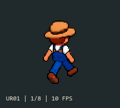 Choose UR01 Frames and sourceAll 8 frames horizontally CURRENT | hands-r15 before-diagonal-arm-reference/frames hands-r15.png
UR02arm-tracking-frames 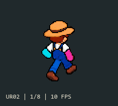 Choose UR02 Frames and sourceAll 8 frames horizontally arm-tracking-frames full-arm-tracking-r12.png
UR03before-07-08-r5/frames Choose UR03 Frames and sourceAll 8 frames horizontally before-07-08-r5/frames
UR04before-arm-smoothing/frames 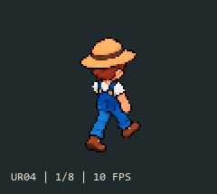 Choose UR04 Frames and sourceAll 8 frames horizontally before-arm-smoothing/frames
UR05before-full-arm-cycle/frames 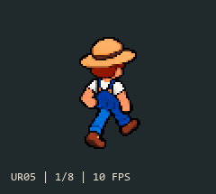 Choose UR05 Frames and sourceAll 8 frames horizontally before-full-arm-cycle/frames
UR06before-hand-rebuild/frames 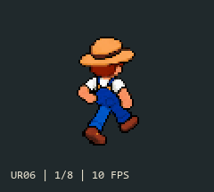 Choose UR06 Frames and sourceAll 8 frames horizontally before-hand-rebuild/frames full-arm-materials-r13.png
UR07hand-candidate 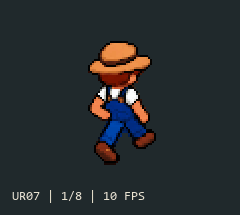 Choose UR07 Frames and sourceAll 8 frames horizontally hand-candidate hands-r16.png
UR08reference-arm-candidate 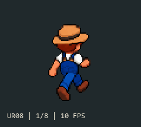 Choose UR08 Frames and sourceAll 8 frames horizontally reference-arm-candidate diagonal-reference-arms-r18.png
UR09rejected-r3/frames 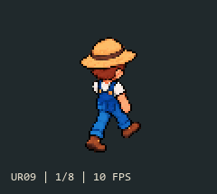 Choose UR09 Frames and sourceAll 8 frames horizontally rejected-r3/frames
UR10materials-r1.png 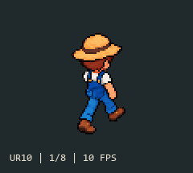 Choose UR10 Frames and sourceAll 8 frames horizontally materials-r1.png
UR11materials-r2.png 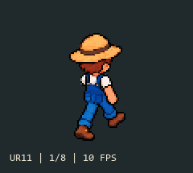 Choose UR11 Frames and sourceAll 8 frames horizontally materials-r2.png
UR13tracking-r2.png 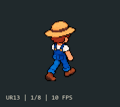 Choose UR13 Frames and sourceAll 8 frames horizontally tracking-r2.png
UR14tracking-r3.png 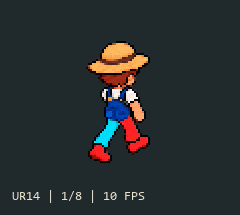 Choose UR14 Frames and sourceAll 8 frames horizontally tracking-r3.png
UR15tracking-r4.png 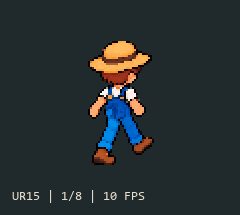 Choose UR15 Frames and sourceAll 8 frames horizontally tracking-r4.png
UR16materials-r5.png 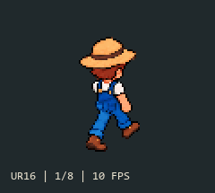 Choose UR16 Frames and sourceAll 8 frames horizontally materials-r5.png
UR17arm-smoothing-r7.png 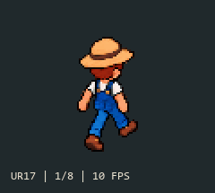 Choose UR17 Frames and sourceAll 8 frames horizontally arm-smoothing-r7.png
UR18arm-smoothing-r8.png 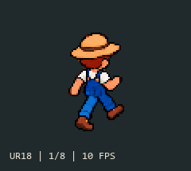 Choose UR18 Frames and sourceAll 8 frames horizontally arm-smoothing-r8.png
UR19arm-smoothing-r9.png 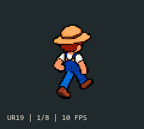 Choose UR19 Frames and sourceAll 8 frames horizontally arm-smoothing-r9.png
UR20full-arm-tracking-r11.png 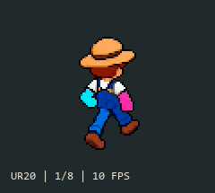 Choose UR20 Frames and sourceAll 8 frames horizontally full-arm-tracking-r11.png
UR22diagonal-reference-arms-r17.png 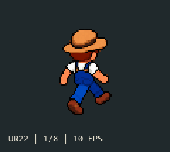 Choose UR22 Frames and sourceAll 8 frames horizontally diagonal-reference-arms-r17.png
UR23diagonal-reference-arms-r19.png 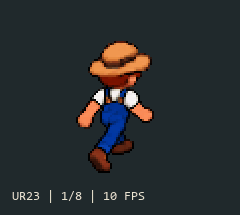 Choose UR23 Frames and sourceAll 8 frames horizontally diagonal-reference-arms-r19.png
UR24materials-r4.png 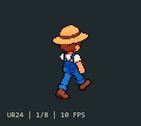 Choose UR24 Frames and sourceAll 8 frames horizontally materials-r4.png
UR25tracking-r1.png 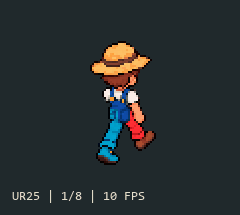 Choose UR25 Frames and sourceAll 8 frames horizontally tracking-r1.png
UL01CURRENT | hands-r15 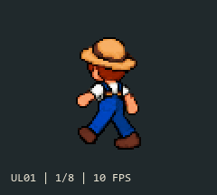 Choose UL01 Frames and sourceAll 8 frames horizontally CURRENT | hands-r15 before-diagonal-arm-reference/frames hand-candidate hands-r15.png
UL02arm-tracking-frames 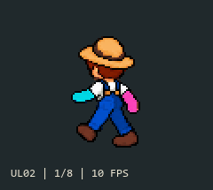 Choose UL02 Frames and sourceAll 8 frames horizontally arm-tracking-frames full-arm-tracking-r12.png
UL03before-arm-smoothing/frames 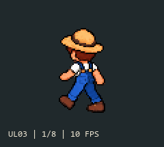 Choose UL03 Frames and sourceAll 8 frames horizontally before-arm-smoothing/frames
UL04before-arms-2026-10-05/frames 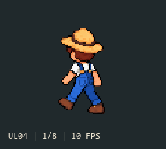 Choose UL04 Frames and sourceAll 8 frames horizontally before-arms-2026-10-05/frames
UL05before-full-arm-cycle/frames 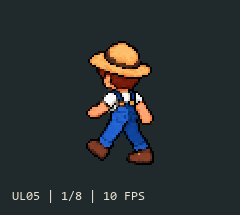 Choose UL05 Frames and sourceAll 8 frames horizontally before-full-arm-cycle/frames
UL06before-hand-rebuild/frames 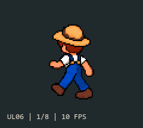 Choose UL06 Frames and sourceAll 8 frames horizontally before-hand-rebuild/frames full-arm-materials-r13.png
UL07reference-arm-candidate 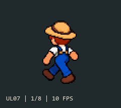 Choose UL07 Frames and sourceAll 8 frames horizontally reference-arm-candidate diagonal-reference-arms-r18.png
UL08rejected-r3/frames 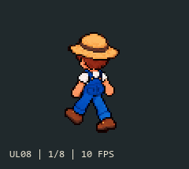 Choose UL08 Frames and sourceAll 8 frames horizontally rejected-r3/frames
UL09materials-r1.png 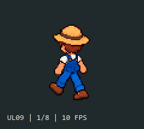 Choose UL09 Frames and sourceAll 8 frames horizontally materials-r1.png
UL10materials-r2.png 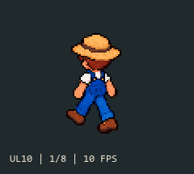 Choose UL10 Frames and sourceAll 8 frames horizontally materials-r2.png
UL11rebuild-tracking-r4.png 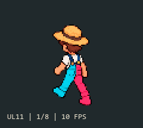 Choose UL11 Frames and sourceAll 8 frames horizontally rebuild-tracking-r4.png
UL12rebuild-tracking-r5.png 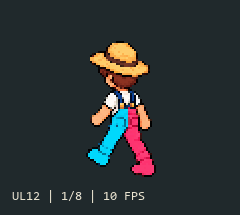 Choose UL12 Frames and sourceAll 8 frames horizontally rebuild-tracking-r5.png
UL13rebuild-materials-r6.png 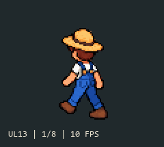 Choose UL13 Frames and sourceAll 8 frames horizontally rebuild-materials-r6.png
UL14rebuild-materials-r7.png 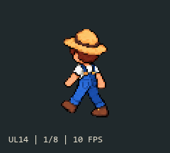 Choose UL14 Frames and sourceAll 8 frames horizontally rebuild-materials-r7.png
UL17full-arm-tracking-r11.png Choose UL17 Frames and sourceAll 8 frames horizontally full-arm-tracking-r11.png
UL19diagonal-reference-arms-r17.png Choose UL19 Frames and sourceAll 8 frames horizontally diagonal-reference-arms-r17.png
UL20diagonal-reference-arms-r19.png Choose UL20 Frames and sourceAll 8 frames horizontally diagonal-reference-arms-r19.png
UL21rebuild-tracking-r6-packed.png Choose UL21 Frames and sourceAll 8 frames horizontally rebuild-tracking-r6-packed.png